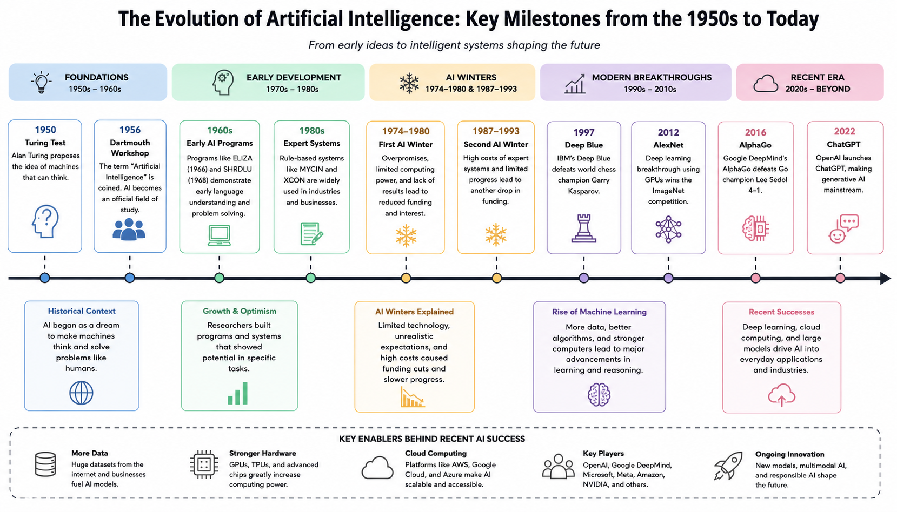

Lohith Kancharla
Machine Learning Fundamentals Portfolio
This portfolio highlights my learning journey in AI and Machine Learning, beginning with a visual timeline that explains how artificial intelligence evolved from early ideas into today’s powerful tools.
View My First ArtifactAI and ML Timeline
1950s → TodayAbout Me
I am building this portfolio to document my growth in Artificial Intelligence and Machine Learning. Through this course, I am learning how AI has developed over time, how machine learning is used in real-world industries, and how technology can support problem-solving and innovation.
This portfolio is also a place to show not only what I created, but how I created it. Each artifact includes the objective, process, tools, and value behind the work.
Portfolio Artifact

This artifact is a visual timeline showing the evolution of Artificial Intelligence and Machine Learning from the 1950s to today. It includes major milestones such as the Turing Test, Dartmouth Conference, AI winters, Deep Blue, AlexNet, AlphaGo, Transformer models, ChatGPT, and the modern multimodal AI era.
I created this artifact to understand how AI developed over time and how historical events shaped the field. The goal was to show the connection between early AI ideas, periods of slowed progress, and recent breakthroughs made possible by deep learning, GPUs, cloud computing, and large datasets.
I reviewed the assignment instructions, researched important AI milestones, organized the events in chronological order, and grouped them into major sections such as foundations, AI winters, deep learning, and generative AI. I designed the timeline to be simple, visual, and easy to understand.
I used ChatGPT to organize ideas and improve wording, Canva or Lucidchart to design the timeline, course materials for assignment guidance, and GitHub Pages to publish this portfolio website.
This artifact is important because it shows my ability to research, organize, and explain complex technical information in a clear visual format. Professionally, it demonstrates skills in research, communication, technology awareness, design thinking, and digital presentation.
Reflection
Creating the AI and ML Timeline helped me understand that artificial intelligence did not develop overnight. Before this assignment, I mostly thought of AI as a modern technology, but this artifact showed me that AI has a long history going back to the 1950s.
One important lesson I learned is that AI progress depends on more than strong ideas. Early researchers had big goals, but the technology was not always ready. The AI winters showed that limited computing power, high expectations, and lack of practical results slowed progress.
This artifact also helped me practice turning research into a visual resource. I had to choose the most important events and present them clearly. I believe this timeline could help others quickly understand the major turning points in AI history.
Contact
Thank you for visiting my AI/ML learning portfolio. This site will continue to grow as I add more artifacts and reflections from my coursework.
Email Me